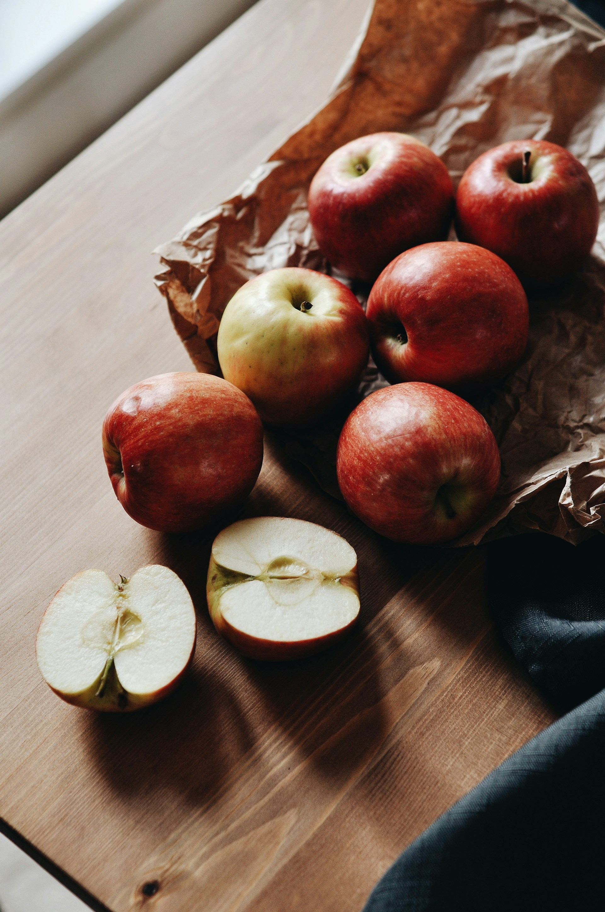
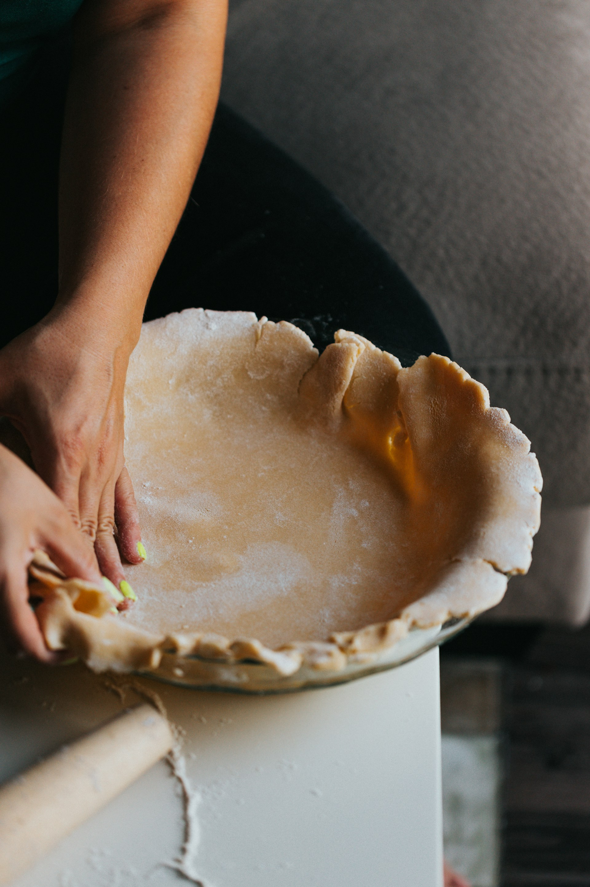
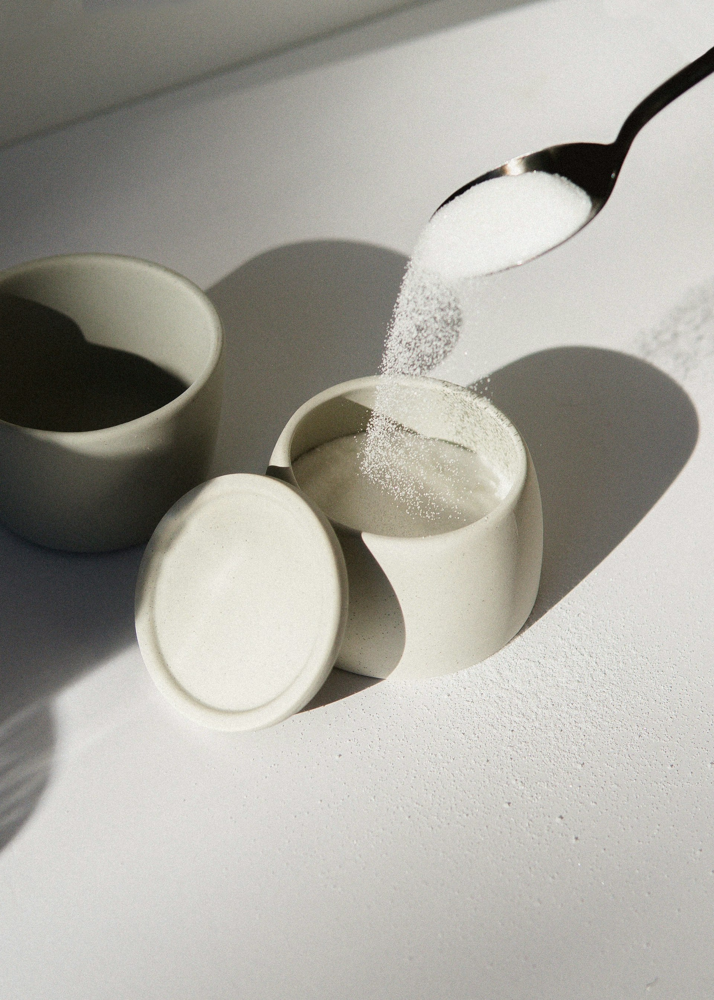
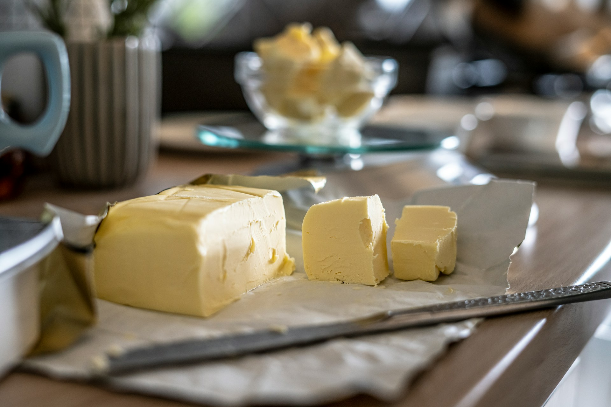
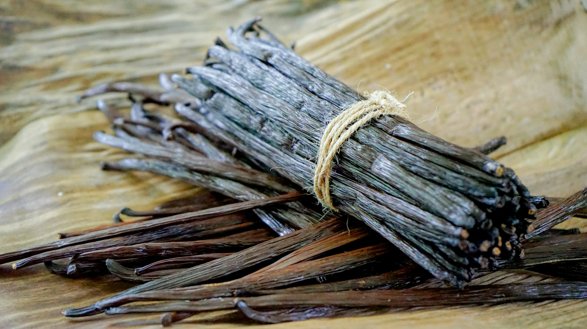

Tarte aux pommes
Ingrédients

4 pommes

1 pâte brisée

80 g de sucre

40 g de beurre

1 sachet de sucre vanillé
Préparation
- Préchauffer le four à 180°C.
- Éplucher et couper les pommes.
- Disposer la pâte dans un moule.
- Ajouter les pommes et le sucre.
- Enfourner pendant 40 minutes.